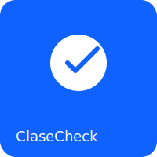

ClaseCheck
Registro inteligente de asistencia
Iniciar sesión
Rol
Alumno
Docente
Administración
Usuario
Contraseña
Ingresar
Credenciales
Usuario o contraseña incorrectos
Usuario
Cerrar sesión
Panel Alumno
Materia (inscripto)
Escanear QR (usar cámara)
Pegar token
Cerrar cámara
Registrar token
Mi historial
Materia
Fecha
Estado
Panel Docente
Seleccionar materia
Generar QR de clase
Detener QR
Validar todo
Registros recientes
Alumno
Fecha
Validado
Panel Administración
Alertas y reportes.
Reporte
Alumno
Materia
Faltas